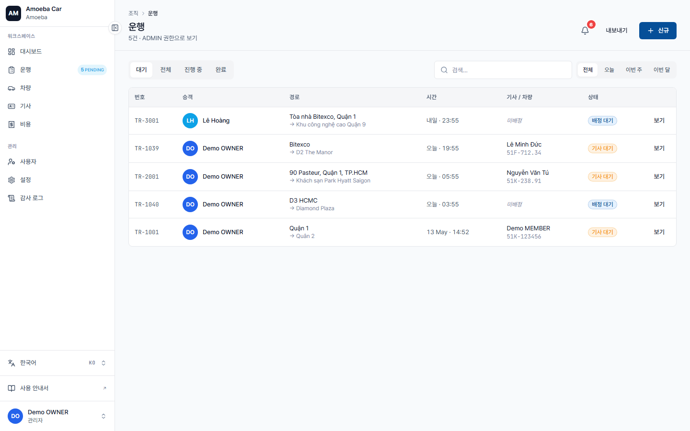
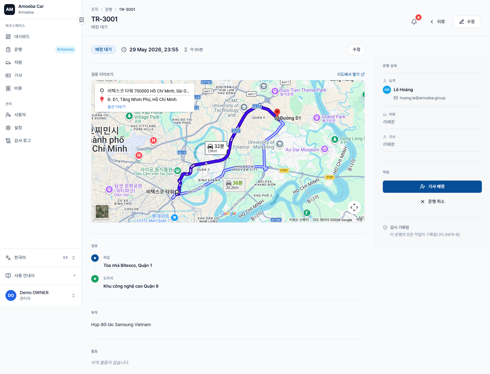
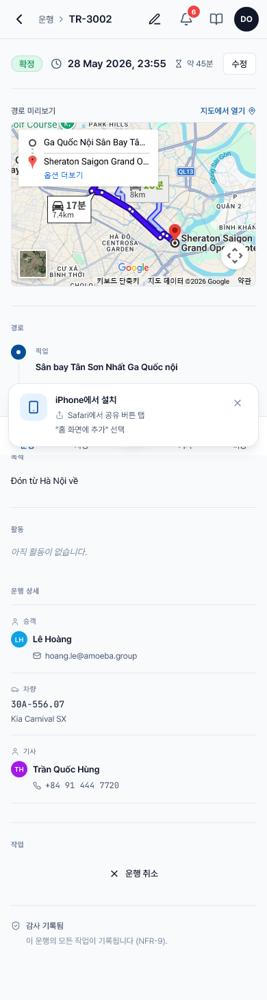

운행 추적
🌐
한국어 번역 진행 중 — 이 페이지의 본문 일부는 아직 베트남어입니다. 제목·사이드바·이미지는 한국어로 제공되며, 본문 번역은 점진적으로 업데이트됩니다. 급한 경우 베트남어 원문을 참고하세요.
- URL
/trips(danh sách) và/trips/[id](chi tiết)- 범위
- Chỉ 운행 do bạn tạo hoặc bạn là 승객
Danh sách 운행 của tôi

Trang /trips hiển thị toàn bộ 운행 của bạn theo thứ tự 출발 시각 mới nhất. Mỗi dòng có:
- Mã 운행 (TR-3001…)
- Tuyến (출발지 → 도착지)
- Ngày + giờ 출발
- Xe + 기사 (nếu đã gán)
- Nhãn trạng thái (Chờ phân công / Chờ 기사 / Đã xác nhận / Đang đi / Hoàn tất / 취소)
Bộ lọc trên cùng cho phép lọc theo:
- Trạng thái (đa chọn)
- Khoảng ngày
- Xe / 기사
- Từ khoá (tìm theo địa chỉ hoặc 목적)
Chi tiết 운행

Trang chi tiết hiển thị:
- Bản đồ tuyến đường (Google Embed)
- Thông tin cơ bản — pickup, dropoff, thời gian, 목적, 메모
- 경유지 (nếu có)
- Người + xe — passenger, driver, vehicle, plate
- Lịch sử trạng thái — ai đã tạo / gán / xác nhận / bắt đầu / kết thúc
- Nút hành động dưới cùng (xem dưới)
Hành động bạn được làm
| Trạng thái 운행 | Hành động |
|---|---|
| Chờ phân công · Chờ 기사 · Đã xác nhận (chưa chạy) | ✅ 취소 운행 (cần ghi lý do) |
| Đang đi · Hoàn tất · Đã 취소 · Bị từ chối | ❌ Chỉ xem, không sửa được |
| Bất kỳ trạng thái nào | 📝 Cập nhật 메모 (không sửa data chính) |
Đặc biệt: 운행 bạn là 승객
Nếu một Admin/Quản lý khác đặt 운행 cho bạn (TR-3002), bạn vẫn thấy 운행 đó trong danh sách. Nhưng bạn không có quyền 취소 — chỉ người tạo 운행 hoặc Admin mới 취소 được.

📱
Trên điện thoại, danh sách hiển thị dạng card cuộn dọc, nút "취소 운행" nằm cuối trang chi tiết.